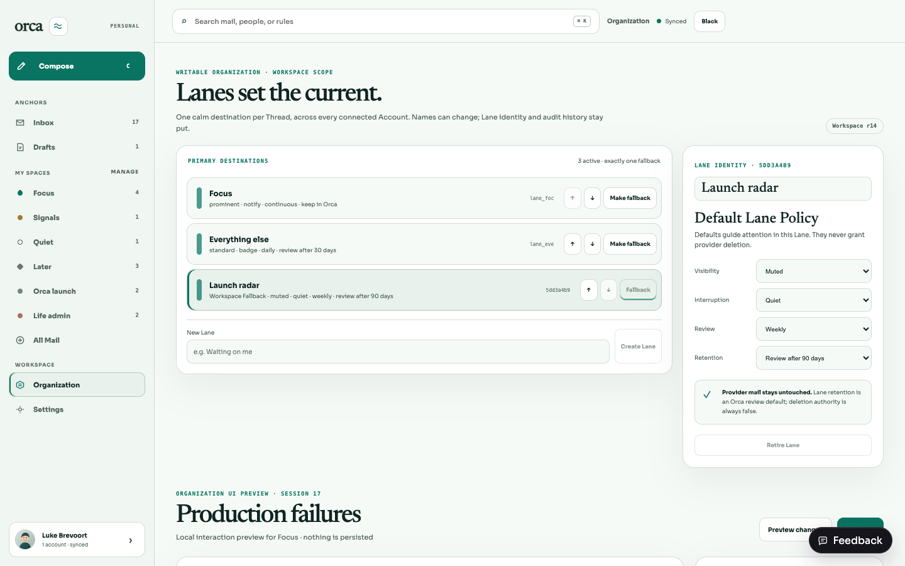
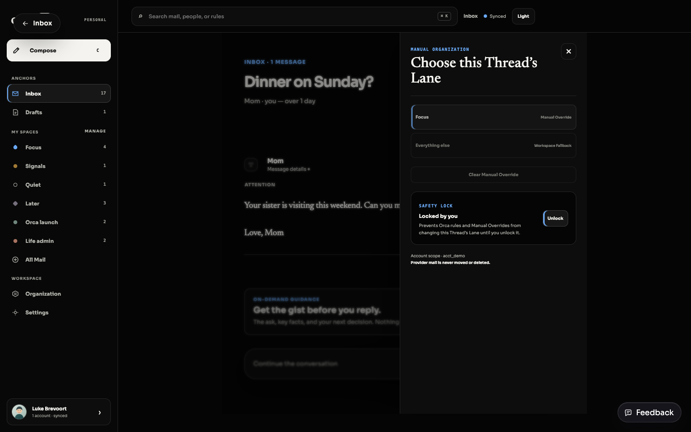
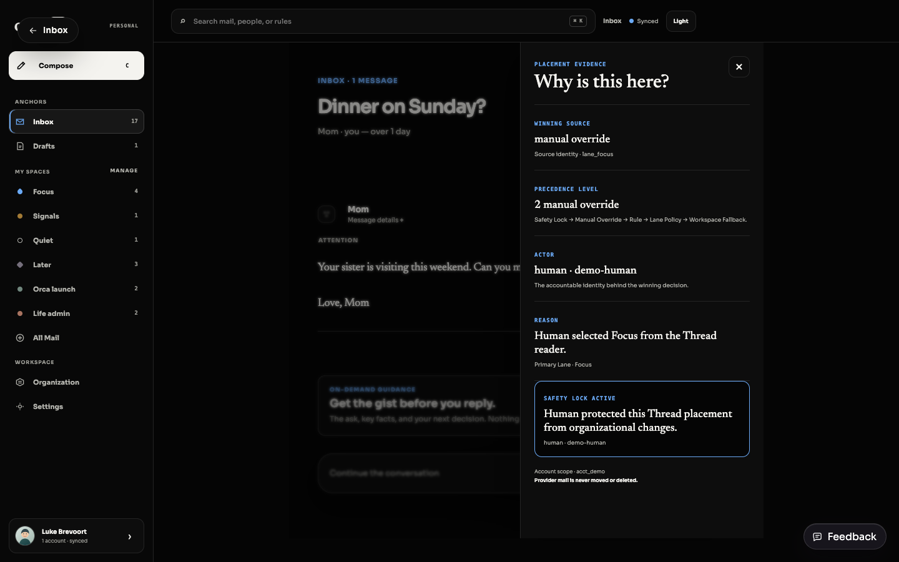

Stable destinations
Renaming, reordering, Policy changes, and retirement do not change a Lane ID. One active Lane is the Workspace Fallback.
The first writable Organization slice: stable user-defined Lanes, separate Policies, one Workspace Fallback, Account-qualified Thread routing, Manual Override, Safety Lock, and complete placement evidence.
REST and React remain adapters. Lane meaning, scope enforcement, precedence, revisions, idempotency, and audit evidence live behind the Organization module interface.
Renaming, reordering, Policy changes, and retirement do not change a Lane ID. One active Lane is the Workspace Fallback.
Migration backfills every Thread and SQLite provisions every future Thread through a foreign-keyed insert trigger. Unresolved outcomes follow the current Fallback.
Manual Override wins above Rules and Lane Policy. Safety Lock prevents subsequent placement changes until a human unlocks it.
Policy supports visibility, interruption, review, and retention defaults. The wire contract and database both require providerDeletion: false.
Run the web app, then use these short journeys. Demo mode is deterministic and does not require credentials.
/dev/inbox?destination=organization→Enter a New Lane name→Create Lane→Rename or reorder→Change four Policy defaultsThe drawer never guesses. It renders authoritative fields returned by Organization query/apply and separately names an active Safety Lock.
Captured from the deterministic desktop demo at 1440×900 using the repository-required browser automation.



Run focused checks first for quick feedback, then the complete workspace gate.
CI=true bun test \ apps/api/src/organization/lanes/module.test.ts \ apps/api/src/organization/lanes/migration.test.ts \ apps/api/src/organization/routes.test.ts \ apps/web/src/organization-lanes.test.tsx \ apps/web/src/App.interaction.test.tsx
CI=true bun run typecheck CI=true bun run test CI=true bun run build CI=true bun run lint
Each claim has executable or visual evidence; no criterion depends on inference from implementation alone.
| # | Criterion | Evidence |
|---|---|---|
| 1 | Exactly one primary Lane; unresolved uses Fallback | Migration + module backfill/trigger, fallback routing tests |
| 2 | Stable identity separate from name and Policy | Module + UI rename/reorder identity test and identity label |
| 3 | Four Policy defaults; no provider deletion | Schema + DB literal false and SQLite CHECK |
| 4 | Manual Override/Safety Lock in current Thread; theme safe | Interaction + screenshots reader flow in both identities |
| 5 | Across Accounts while preserving Account scope | REST + FK multi-Account route and isolation tests |
| 6 | Why evidence names source, precedence, Actor, reason | Contract + interaction drawer assertions |
| 7 | Storage, API, UI, fixtures, tests, E2E evidence | Complete this guide and linked artifacts |
| 8 | Five-operation semantics/provider boundaries intact | Authority tests same gate; simulate/revert explicit; send/delete forbidden |
Note Rules, simulation, and revert remain outside this writable slice. Their existing explicit disabled semantics are unchanged.